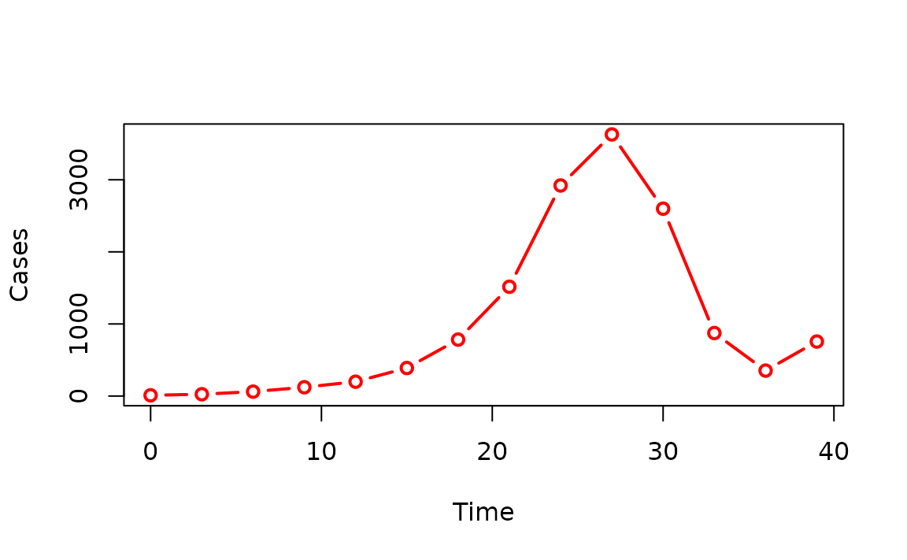

Getting started with epichains
James M. Azam and Sebastian Funk
Source:vignettes/epichains.Rmd
epichains.RmdThis vignette demonstrates how get started with using the epichains package for simulating transmission chains or estimating the likelihood of observing a transmission chain.
- To understand the theoretical background of the branching processes
methods used here, refer to the theory vignette
vignette("theoretical_background"). - To understand the software development design decisions and
implementation details of the package, refer to the design vignette
vignette("design-principles").
Infectious disease epidemics spread through populations when a chain of infected individuals transmit the infection to others. Branching processes can be used to model this process. A branching process is a stochastic process where each infectious individual in a generation gives rise to a random number of individuals in the next generation, starting with the index case in generation 1. The distribution of the number of offspring is called the offspring distribution.
The size of the transmission chain is the total number of individuals infected by a single case, and the length of the transmission chain is the number of generations from the first case to the last case they produced before the chain ended. The size calculation includes the first case and the length calculation includes the first generation when the first case starts the chain (See figure below).
![The figure shows an example of a transmission chain starting with a single case C1. The complete chain is depicted as blue circles linked by orange directed arrows showing the cases produced in each generation. Each generation is marked by a brown rectangle and labelled Gen 1, Gen 2, and Gen 3. The chain grows through generations Gen 1, Gen 2, and Gen 3. Case C1 starts in Gen 1 and produces cases C2, and C3 in Gen 2. In Gen 3, C2 produces C4 and C5, and C3 produces C6. The chain ends in Gen 3. The chain size of C1 is 6, which includes C1 (that is the sum of all the blue circles, representing cases) and the length is 3, which includes Gen 1 (maximum number of generations reached by C1's chain).](img%2Ftransmission_chain_example.png)
An example of a transmission chain starting with a single case C1. Cases are represented by blue circles and arrows indicate who infected whom. The chain grows through generations Gen 1, Gen 2, and Gen 3, producing cases C2, C3, C4, C5, and C6. The chain ends at generation Gen 3 with cases C4, C5, and C6. The size of C1’s chain is 6, including C1 (that is, the sum of all blue circles) and the length is 3, which includes Gen 1 (maximum number of generations reached by C1’s chain).
epichains provides methods to analyse and simulate the size and length of branching processes with an arbitrary offspring distribution. These can be used, for example, to analyse the distribution of chain sizes or length of infectious disease outbreaks, as discussed in Farrington, Kanaan, and Gay (2003) and Blumberg and Lloyd-Smith (2013).
Transmission chains likelihoods
Use case
Suppose we have observed a number of transmission chains, each arising from a separate index case. What are the likely transmission properties (reproduction number and/or superspreading coefficient) that generated these chains (assuming these parameters are the same across all the chains)?
The first step in answering this question is to calculate the
likelihood of observing the observed chain summaries given the
transmission properties. This is where the likelihood()
function comes in. The returned estimate can then be used to infer the
transmission properties using estimation frameworks such as maximum
likelihood or Bayesian inference.
epichains does not provide these estimation frameworks.
What we assume
- An offspring distribution that governs the number of secondary cases produced by each case.
- Parameters of the offspring distribution (for example, mean and overdispersion if using a negative binomial; which can then be interpreted as reproduction number and superspreading coefficient, respectively)
- (optional) An observation process/probability that generates the observed chain summaries.
- (optional) A threshold of chain summaries that are considered too large to be consistent with a reproduction number of (e.g., cases or generations in total).
likelihood()
This function calculates the likelihood/loglikelihood of observing a vector of outbreak summaries obtained from transmission chains. “Outbreak summaries” here refer to transmission chain sizes or lengths/durations.
likelihood() requires a vector of chain summaries (sizes
or lengths), chains, the corresponding statistic to use,
statistic, the offspring distribution,
offspring_dist and its associated parameters.
offspring_dist is specified by the R function that is
used to generate random numbers, i.e. rpois for Poisson,
rnbinom for negative binomial, or a custom function.
By default, the result is a log-likelihood but if
log = FALSE, then likelihoods are returned (See
?likelihood for more details).
To understand how likelihood() works see the section on
How likelihood()
works.
Let’s look at the following example where we estimate the
log-likelihood of observing chain_sizes.
set.seed(121)
# example of observed chain sizes
# randomly generate 20 chains of size between 1 to 10
chain_sizes <- sample(1:10, 20, replace = TRUE)
chain_sizes
#> [1] 4 7 4 9 1 3 7 5 1 8 10 2 1 2 4 5 10 6 8 7
# estimate loglikelihood of the observed chain sizes for given lambda
likelihood_eg <- likelihood(
chains = chain_sizes,
statistic = "size",
offspring_dist = rpois,
nsim_obs = 100,
lambda = 0.5
)
# Print the estimate
likelihood_eg
#> [1] -67.82879Joint and individual log-likelihoods
likelihood(), by default, returns the joint
log-likelihood, given by the sum of log-likelihoods of each observed
chain. If instead the individual log-likelihoods are desired (for
example for calculating Watanabe–Akaike
information criterion values, then the individual
argument must be set to TRUE. To return likelihoods
instead, set log = FALSE.
set.seed(121)
# example of observed chain sizes
# randomly generate 20 chains of size between 1 to 10
chain_sizes <- sample(1:10, 20, replace = TRUE)
chain_sizes
#> [1] 4 7 4 9 1 3 7 5 1 8 10 2 1 2 4 5 10 6 8 7
# estimate loglikelihood of the observed chain sizes
likelihood_ind_eg <- likelihood(
chains = chain_sizes,
statistic = "size",
offspring_dist = rpois,
nsim_obs = 100,
lambda = 0.5,
individual = TRUE
)
# Print the estimate
likelihood_ind_eg
#> [[1]]
#> [1] -3.098612 -4.508584 -3.098612 -5.269208 -0.500000 -2.480829 -4.508584
#> [8] -3.622329 -0.500000 -4.900542 -5.619471 -1.693147 -0.500000 -1.693147
#> [15] -3.098612 -3.622329 -5.619471 -4.086190 -4.900542 -4.508584Observation probability
likelihood() uses the argument obs_prob to
model the observation probability.
By default, it assumes perfect observation, where
obs_prob = 1 (See ?likelihood), meaning that
all transmission events are observed and recorded in the data.
If observations are imperfect, the obs_prob must be less
than 1. In the case of imperfect observation, “true” chain sizes or
lengths are simulated nsim_obs times, and the likelihood
calculated for each of the simulations.
For example, if the probability of observing each case is
obs_prob = 0.30, we use
set.seed(121)
# example of observed chain sizes; randomly generate 20 chains of size 1 to 10
chain_sizes <- sample(1:10, 20, replace = TRUE)
# get their likelihood
liks <- likelihood(
chains = chain_sizes,
statistic = "size",
offspring_dist = rpois,
obs_prob = 0.3,
lambda = 0.5,
nsim_obs = 10
)
liks
#> [1] -183.8670 -162.1382 -166.6720 -170.1077 -152.9557 -157.9814 -166.0587
#> [8] -174.8488 -156.4197 -160.0229This returns 10 likelihood values (because
nsim_obs = 10), which can be averaged to come up with an
overall likelihood estimate.
How likelihood() works
likelihood() first checks if an analytical solution of
the likelihood exists for the given offspring distribution and chain
statistic specified. If there’s none, simulations are used to estimate
the likelihoods.
The epichains package includes closed-form (analytical) solutions for calculating the likelihoods associated with certain summaries of transmission chains (“size” or “length”) for specific offspring distributions.
For the size distributions, the package provides the Poisson, negative binomial, and gamma-borel mixture.
To provide the gamma-Borel size likelihood, the Borel distribution is needed. However, base R does not provide this distribution natively like poisson and gamma, so epichains provides its density and random generator.
For the length distribution, there’s the Poisson and geometric
distributions. These can be used with likelihood() based on
what is specified for offspring_dist and
statistic.
If an analytical solution does not exist, an internal simulation
function, .offspring_ll() is employed. It uses simulations
to approximate the probability distributions (using
a linear approximation to the cumulative distribution for unobserved
sizes/lengths). If simulation is to be used, an extra argument
nsim_offspring must be passed to likelihood()
to specify the number of simulations to be used for this approximation.
Approximate values of the likelihood will vary with every call to the
simulation (because the simulations used for estimation vary), and it
may be worth calling likelihood() multiple times in this
case to see the error this may introduce.
For example, let’s look at an example where chain_sizes
is observed and we want to calculate the likelihood of this being drawn
from a binomial distribution with probability
prob = 0.9.
set.seed(121)
# example of observed chain sizes; randomly generate 20 chains of size 1 to 10
chain_sizes <- sample(1:10, 20, replace = TRUE)
# get their likelihood
liks <- likelihood(
chains = chain_sizes,
offspring_dist = rbinom,
statistic = "size",
size = 1,
prob = 0.9,
nsim_offspring = 250
)
liks
#> [1] -56.76805Transmission chain simulation
Use case
We want to simulate a scenario where a number of chains are each produced by a separate index case. We want to simulate the chains of transmission that result from these cases, given a specific offspring distribution and a reproduction number.
What we assume
- An offspring distribution that governs the number of secondary cases produced by each case.
- Parameters of the offspring distribution (for example, mean and overdispersion if using a negative binomial; which can then be interpreted as reproduction number and superspreading coefficient, respectively)
- (optional) A threshold of chain summaries that are considered too large to be consistent with a reproduction number of (e.g., cases or generations in total).
- (optional) A generation time distribution that governs the time between successive cases.
There are two simulation functions, herein referred to collectively
as the simulate_*() functions that can help us achieve
this.
simulate_chains()
simulate_chains() simulates an outbreak from a given
number of infections and an offspring distribution. By default, it
assumes the population is infinite with no pre-existing immunity.
The function tracks and returns information on infectors (ancestors), infectees, the generation of infection, and the time, if a generation time function is specified.
Let’s look at an example where we simulate a transmission tree for index cases. We assume a poisson offspring distribution with mean, , and a generation time of days:
set.seed(32)
# Define generation time
generation_time_fn <- function(n) {
gt <- rep(3, n)
return(gt)
}
sim_chains <- simulate_chains(
n_chains = 10,
statistic = "size",
offspring_dist = rpois,
stat_threshold = 10,
generation_time = generation_time_fn,
lambda = 0.9
)
head(sim_chains)
#> chain infector infectee generation time
#> 11 1 1 2 2 3
#> 12 2 1 2 2 3
#> 13 3 1 2 2 3
#> 14 3 1 3 2 3
#> 15 4 1 2 2 3
#> 16 6 1 2 2 3By default, simulate_chains() assumes an infinite
population but can account for susceptible depletion when a finite
pop is specified.
Pre-existing immunity levels can also be specified, which will be
applied to pop before the simulation is initialised.
Here is a quick example where we simulate an outbreak in a population of size with index cases and pre-existing immunity. We assume individuals have a poisson offspring distribution with mean, , and fixed generation time of :
set.seed(32)
# Define generation time
generation_time_fn <- function(n) {
gt <- rep(3, n)
return(gt)
}
sim_chains_with_pop <- simulate_chains(
pop = 1000,
n_chains = 10,
percent_immune = 0.1,
offspring_dist = rpois,
statistic = "size",
lambda = 1,
generation_time = generation_time_fn
)
head(sim_chains_with_pop)
#> chain infector infectee generation time
#> 11 1 1 2 2 3
#> 12 2 1 2 2 3
#> 13 3 1 2 2 3
#> 14 3 1 3 2 3
#> 15 4 1 2 2 3
#> 16 6 1 2 2 3
simulate_chain_stats()
simulate_chain_stats() is a performant version of
simulate_chains() that does not track information on each
infector and infectee. It returns the eventual size or length/duration
of each transmission chain. This function is especially useful for
calculating numerical likelihoods in likelihood().
Here is an example to simulate the previous examples without intervention, returning the size of each of the chains. It assumes a Poisson offspring distribution distribution with mean of .
set.seed(123)
simulate_chain_stats_eg <- simulate_chain_stats(
n_chains = 10,
statistic = "size",
offspring_dist = rpois,
stat_threshold = 10,
lambda = 0.9
)
# Print the results
simulate_chain_stats_eg
#> `epichains_summary` object
#>
#> [1] 1 Inf 4 4 Inf 1 2 Inf 5 3
#>
#> Simulated sizes:
#>
#> Max: >=10
#> Min: 1S3 Methods
Summarising
You can run summary() on the object returned by
simulate_chains() to obtain the chain summaries per index
case.
set.seed(32)
# Define generation time
generation_time_fn <- function(n) {
gt <- rep(3, n)
return(gt)
}
sim_chains <- simulate_chains(
n_chains = 10,
statistic = "size",
offspring_dist = rpois,
stat_threshold = 10,
generation_time = generation_time_fn,
lambda = 0.9
)
summary(sim_chains)
#> `epichains_summary` object
#>
#> [1] Inf 2 Inf 2 1 Inf 3 Inf 9 1
#>
#> Simulated sizes:
#>
#> Max: >=10
#> Min: 1
# Example with simulate_chain_stats()
set.seed(32)
simulate_chain_stats_eg <- simulate_chain_stats(
n_chains = 10,
statistic = "size",
offspring_dist = rpois,
stat_threshold = 10,
lambda = 0.9
)
# Get summaries
summary(simulate_chain_stats_eg)
#> $n_chains
#> [1] 10
#>
#> $max_stat
#> [1] Inf
#>
#> $min_stat
#> [1] 1This summary is the same as the output of
simulate_chain_stats() if the same inputs are used.
simulate_chain_stats() is a more performant version of
simulate_chains(), hence, you can use it instead, if you
are only interested in the summary of the simulated chains without
details about the infection tree. :::
We can confirm if the two outputs are the same using
base::setequal(), which checks if two objects are equal and
returns TRUE/FALSE.
Aggregating
You can aggregate <epichains_tree> objects
returned by simulate_chains() a
<data.frame> with columns “cases” and either
“generation” or “time”, depending on the value of by.
To aggregate over “time”, you must have specified a generation time
distribution (generation_time) in the simulation step.
# Example with simulate_chains()
set.seed(32)
# Define generation time
generation_time_fn <- function(n) {
gt <- rep(3, n)
return(gt)
}
sim_chains <- simulate_chains(
n_chains = 10,
statistic = "size",
offspring_dist = rpois,
stat_threshold = 10,
generation_time = generation_time_fn,
lambda = 0.9
)
aggregate(sim_chains, by = "time")
#> time cases
#> 1 0 10
#> 2 3 12
#> 3 6 14
#> 4 9 17
#> 5 12 3
#> 6 15 4
#> 7 18 3Plotting
We can plot individual chains in an <epichains>
object using the {epicontacts}
package.
To do this, we first need to create an
<epicontacts> object using the
epicontacts::make_epicontacts() function, which requires a
linelist and a contacts data.frame (See
?epicontacts::make_epicontacts()).
Some notes about interoperability between
<epicontacts> and <epichains>
objects
-
For the
epicontacts::make_epicontacts()function to work:- the
linelistandcontactsdata.frames must have a column named “id” that uniquely identifies each case. - The
linelistandcontactsobjects can be the same.
- the
An
<epichains>object contains multiple independent chains with their own unique infectee ids, so this does not work out of the box withmake_epicontacts()unless you use a subset chain.For now, we will have to select and visualise individual chains from the
<epichains>object.In future versions of this package, we will make this interaction seamless by providing user-friendly functionality to convert an
<epichains>object to an<epicontacts>in a way that allows us to plot all chains at once.
Let’s subset one of the chains with the biggest size from the
sim_chains object created above.
# Get the biggest chain
longest_chain <- sim_chains[sim_chains$chain == which.max(
unname(table(sim_chains$chain))
), ]
# Convert to data.frame to view the whole data
as.data.frame(longest_chain)
#> chain infector infectee generation time
#> 6 6 NA 1 1 0
#> 16 6 1 2 2 3
#> 17 6 1 3 2 3
#> 18 6 1 4 2 3
#> 27 6 2 5 3 6
#> 28 6 3 6 3 6
#> 29 6 3 7 3 6
#> 30 6 4 8 3 6
#> 42 6 5 9 4 9
#> 43 6 6 10 4 9
#> 44 6 7 11 4 9
#> 45 6 8 12 4 9Now, we can plot the chain using the epicontacts package.
# Create an `<epicontacts>` object
epc <- make_epicontacts(
linelist = longest_chain,
contacts = longest_chain,
id = "infectee",
from = "infector",
to = "infectee",
directed = TRUE
)
# Plot the chain
plot(epc)Aggregated <epichains_tree> objects can also be
plotted using base R or ggplot2 with little to no data
manipulation.
Here is an end-to-end example from simulation through aggregation to plotting.
# Run simulation with simulate_chains()
set.seed(32)
# Define generation time
generation_time_fn <- function(n) {
gt <- rep(3, n)
return(gt)
}
sim_chains <- simulate_chains(
n_chains = 10,
statistic = "size",
offspring_dist = rpois,
stat_threshold = 1000,
generation_time = generation_time_fn,
lambda = 2
)
# Aggregate cases over time
sim_chains_aggreg <- aggregate(sim_chains, by = "time")
# Plot cases over time
plot(
sim_chains_aggreg,
type = "b",
col = "red",
lwd = 2,
xlab = "Time",
ylab = "Cases"
)